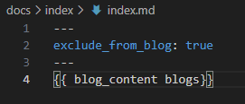

优化静态博客系统
为什么需要优化
因为第一版本 静态博客系统 虽然看起来还行，但是最大的问题是没法生成文章标题和链接，我们需要手动维护，这样既写文章，又要手动维护标题和链接，属实有点累，所以就找了一个自动生成链接的插件：blogging-plugin。
插件安装
blogging-plugin 最好搭配material 主题来使用，所以这里直接安装了这2个插件，安装方式如下：
配置文件修改
修改mkdocs.yml文件
site_name: hudred-li # 站点名称
site_url: https://hudred-li.github.io/ # 站点地址
nav:
- blogs: index/
# - Index: category.md
plugins:
- blogging: # blogging-plugin 配置
locale: zh_CN
dirs:
- ./ # 默认页面路径
size: 10 # 页面展示多少标题
sort:
from: new # old
by: creation
categories: # 分类
- name: blogs # 名称
dirs:
- index # 实际的目录
theme:
name: material
palette:
- media: "(prefers-color-scheme: light)"
scheme: default
primary: white
toggle:
icon: material/weather-night
name: 切换暗色模式
- media: "(prefers-color-scheme: dark)"
scheme: slate
primary: black
toggle:
icon: material/weather-sunny
name: 切换亮色模式
features:
- content.code.copy
- content.code.annotate
markdown_extensions:
- pymdownx.highlight:
anchor_linenums: true
- pymdownx.inlinehilite
- pymdownx.snippets
- pymdownx.superfences
设置自动生成链接
在index 目录下新建index.md 文件，内容如下：

其中exclude_from_blog: true 表示生成标题的时候忽略该文件，
表示生成blogs 标题链接，其中blogs来源于mkdocs.yml 中的
链接生成内容
链接生成的内容需要在每个文档的开头进行标注，例如：
---
author: hudred-li
title: 优化静态博客系统
description: 使用mkdocs+material-blogging-plugin优化博客系统
date: 2024/6/25 21:59
---
这样的话，生成的链接就是这样的：